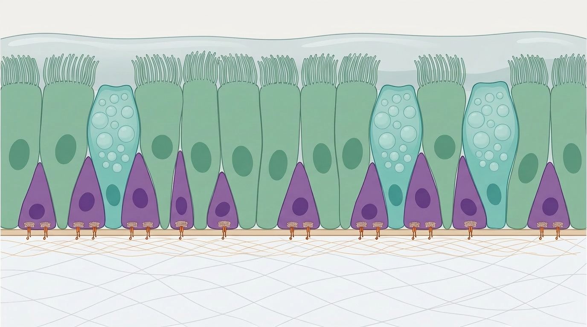

Airway basal cells
The stem cells of the respiratory epithelium
The human airway is lined by a pseudostratified epithelium — a layer of cells that together form a continuous, protective barrier against inhaled pathogens and particulate matter. This barrier is dynamic: cells are lost and replaced continuously, and the epithelium is actively repaired following injury or infection. The cells responsible for this maintenance and regenerative capacity are airway basal cells.
What are airway basal cells?
Basal cells are the stem cell population of the proximal airway epithelium, residing in direct contact with the basement membrane. They are characterised by expression of the transcription factor TP63 (p63) and structural proteins including keratin 5 (KRT5) and keratin 14 (KRT14). In the pseudostratified epithelium of the human nose, larynx, trachea and bronchi, basal cells constitute the major proliferative cell type.
During normal tissue homeostasis, basal cells divide at a low rate to replenish the differentiated cells of the epithelium — primarily ciliated cells, which drive mucociliary clearance, and mucosecretory (goblet) cells, which produce the mucus layer. Following epithelial injury, basal cells expand rapidly and differentiate to restore barrier function. This capacity for self-renewal and multipotent differentiation is the defining property of a stem cell population.
Basal cell heterogeneity
Airway basal cells are not a uniform population. Subsets can be distinguished by marker gene expression. For example, only a fraction of KRT5-positive basal cells co-express KRT14, and this subset is thought to be enriched for injury-responsive progenitors. More recently, single-cell transcriptomic approaches have revealed considerable diversity within the basal cell compartment, identifying luminal progenitor cells that express both basal and luminal markers and are thought to represent cells in transit towards differentiation. Understanding the functional relevance of this heterogeneity — which subsets are most important for regeneration, and why — is an active area of investigation and a key focus of research at EpiCENTR.
Basal cells and lung disease
Dysfunction of airway basal cells contributes to a range of chronic lung diseases. In chronic obstructive pulmonary disease (COPD) and asthma, basal cells from affected donors demonstrate impaired differentiation capacity in vitro. In cystic fibrosis, genetic variants in CFTR disrupt ion transport across the differentiated epithelium, but basal cells also carry the causative variant and represent a tractable target for gene correction. Primary ciliary dyskinesia similarly affects the ciliated cells produced by basal cell differentiation, with consequences for mucociliary clearance.
Beyond chronic disease, the rapid epithelial desquamation that accompanies infections with respiratory viruses including influenza and respiratory syncytial virus (RSV) requires basal cell-mediated repair for full recovery of barrier function. Airway basal cells are also the leading candidate cell-of-origin for lung squamous cell carcinoma, which arises predominantly in the central airways and shares the basal cell marker expression profile.
Modelling airway basal cells in the laboratory
Much of what we know about airway basal cell biology has emerged from advances in primary cell culture. Methods for expanding human basal cells in the laboratory have improved considerably over the past decade. Co-culture with mitotically inactivated fibroblast feeder cells, combined with inhibition of the Rho-associated kinase (ROCK) pathway, allows large numbers of basal cells to be grown from small nasal, tracheal, bronchial or small airway biopsies while retaining their differentiation capacity. We have recently reported a new approach using WS6 for scalable ex vivo expansion and gene editing of human basal epithelial cells.
Three-dimensional organoid and tracheosphere systems provide complementary model systems in which basal cells self-organise into structures containing multiple airway epithelial cell types. We have applied these approaches to identify Wnt signalling as a key regulator of basal cell proliferation and fate. Learn more about our work on airway organoids and in vitro models.
Why basal cells matter for regenerative medicine
The ability to expand patient-derived basal cells ex vivo, genetically modify them, and return them to the airway opens the possibility of autologous cell and gene therapies for airway diseases. Learn more about our work on cell and gene therapy for airway disease and about epidermolysis bullosa, one of the rare diseases where we are developing proof-of-concept for this approach.